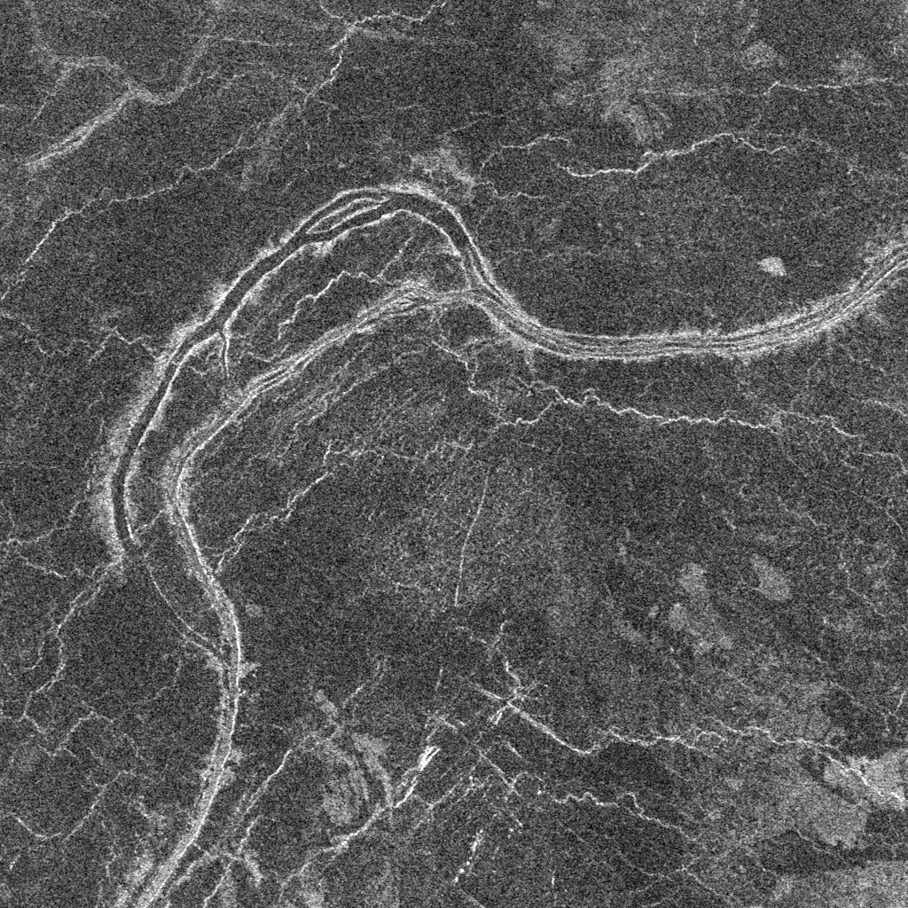
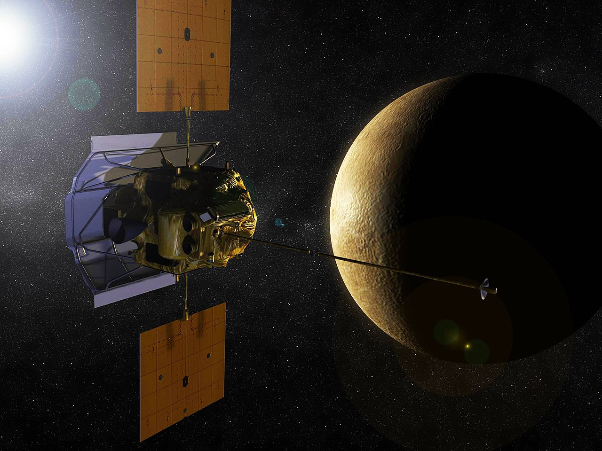

Venus
Venus is the second planet from the Sun and the sixth-largest planet in the Solar System, along with Mercury, Earth, and Mars, belonging to the family of terrestrial planets. Named after the ancient Roman goddess of love, Venus. In several characteristics, such as mass and size, Venus is considered the "sister" of Earth. The Venusian year lasts 224.7 Earth days. It has the longest rotation period around its axis (about 243 Earth days, on average 243.0212 ± 0.00006 days) among all the planets of the Solar System and rotates in the opposite direction to the rotation direction of most planets.

Venus has no natural satellites. In the Earth's sky, Venus is the third brightest celestial body after the Sun and the Moon. Its brightness reaches an apparent visual magnitude of −4.6m and is sufficient to cast visible shadows at night. Venus is occasionally visible to the naked eye even during daylight hours.
Astronomical Characteristics
Venus has a dense atmosphere consisting of over 96% carbon dioxide gas. The atmospheric pressure on the planet's surface is 92 times higher than on Earth's surface and is approximately equal to the pressure of water at a depth of 900 meters. Due to the high pressure, the carbon dioxide gas in the near-surface part of the atmosphere is no longer a gas but a supercritical fluid, making this part of the atmosphere a "semi-solid-semi-gaseous" ocean of supercritical carbon dioxide. The average surface temperature of Venus is 735 K (462 °C), making it the hottest planet in the Solar System, despite Mercury being closer to the Sun. Venus is covered by an opaque layer of clouds made of sulfuric acid with high reflectivity, which obscures the planet's surface from direct view. The high surface temperature is caused by the greenhouse effect.

Venus is classified as a terrestrial planet, and it is sometimes referred to as the "sister of Earth" because both planets are similar in size and composition. However, the conditions on the two planets are very different. Venus' atmosphere, the densest among the terrestrial planets, consists mostly of carbon dioxide gas. The planet's surface is completely shrouded by clouds of sulfuric acid, opaque in visible light. Debates about what lies beneath Venus' clouds persisted into the 20th century. However, Venus' atmosphere is transparent to decimeter radio waves, which were later used to study the planet's surface relief.
The atmospheric pressure on Venus' surface is 92 times higher than on Earth. Detailed mapping of Venus' surface has been conducted over the last 22 years, including by the "Magellan" project. Venus' surface exhibits prominent signs of volcanic activity, and the atmosphere contains sulfur. There are indications that volcanic activity on Venus continues to this day. The remarkably low number of impact craters suggests that Venus' surface is relatively young, approximately 500 million years old. Venus lacks plate tectonics (likely due to its lithosphere being very viscous due to the absence of water and therefore not sufficiently mobile), but there are many signs of smaller-scale tectonic movements.
Exploration of Venus
As one of the brightest objects in the sky, Venus has become an important element in human culture. As the closest planet to Earth, Venus was a primary target for early interplanetary exploration. It was also the first planet whose vicinity was visited by a spacecraft (Mariner 2 in 1962), and onto whose surface a landing was performed (Venera 7 in 1970). Venus' dense clouds preclude observation of its surface in visible light, so detailed maps of its surface only emerged after the "Magellan" spacecraft entered Venus' orbit in 1991, conducting radar imaging of Venus' surface with high resolution. There are plans for more ambitious missions to the surface of Venus, including rover missions, but they are hindered by the harsh conditions on Venus' surface.
The most detailed map of the surface was compiled by the American spacecraft "Magellan", which surveyed 98% of the planet's surface. Mapping revealed large highlands on Venus. The largest of them are Ishtar Terra and Aphrodite Terra, comparable in size to Earth's continents. There are relatively few impact craters on Venus. A significant portion of the planet's surface is geologically young (about 500 million years old). 90% of the planet's surface is covered by solidified basaltic lava.
In 2009, a map of the southern hemisphere of Venus was published, compiled using the "Venus Express" spacecraft. Based on the data from this map, hypotheses emerged about the presence of water oceans and intense tectonic activity on Venus in the past.